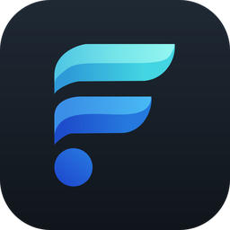
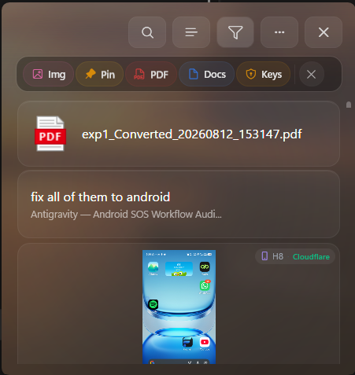
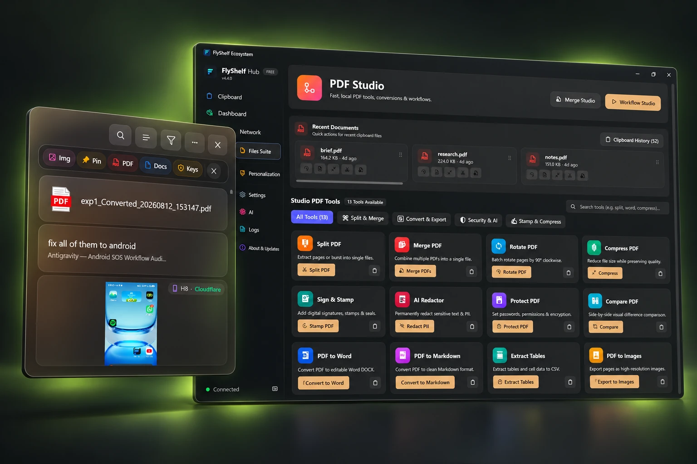
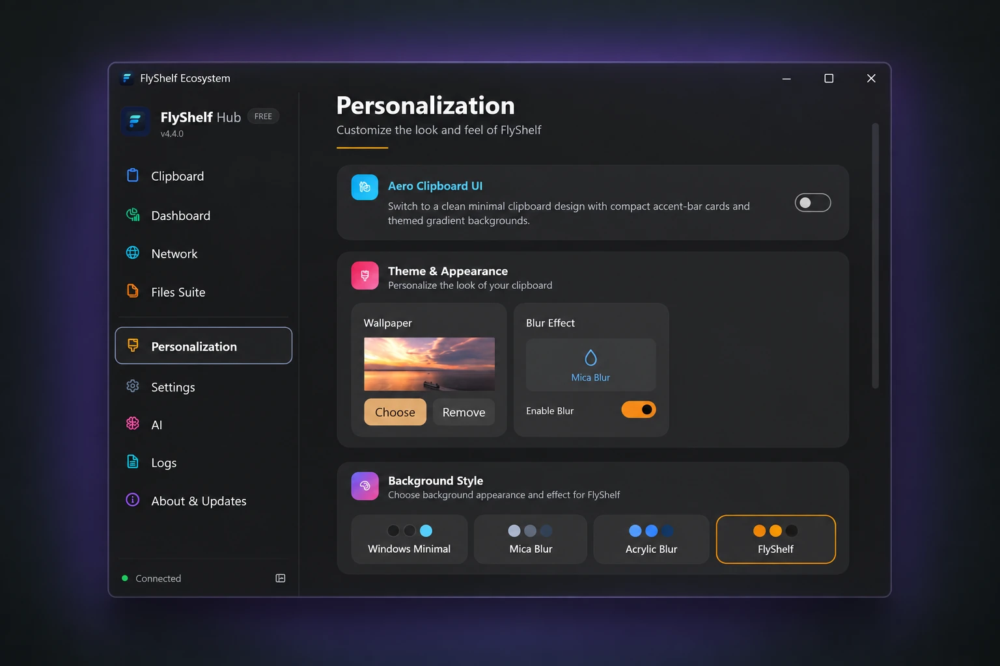

YOUR SECOND MEMORY
Copy it. Don’t lose it.
Text, links, images, code and files. A searchable clipboard history that remembers when you don’t.
A home for every “I’ll need this later.” ↗

FlyShelf✳Big ideas. Tiny snippets. That thing you copied
five minutes ago. Give it all a place to land.
The clipboard manager that connects Windows & Android.
What if your clipboard
could keep up with
your imagination?
const ideas = capture(); await ideas.sync(); // keep the good stuff.

You do the thinking.
FlyShelf catches everything in between.
Text, links, images, code and files. A searchable clipboard history that remembers when you don’t.
Connect Windows and Android. Bring your clipboard and files along with direct sync over your local network.
Extract text with OCR, merge PDFs, jot down notes and expand snippets. Keep the useful things close.
That link. That line of code. That spark of an idea. Find your favorites without breaking your stride.
FlyShelf saves it in the background.
Press Alt + C in the Windows app.
Your best bits, a moment away.
No clips found. Try another search.
Your clipboard shouldn’t either.
Scan. Pair. Keep moving.
Make something worth copying.
SAVED ON YOUR SHELFA little space for
your next big idea.
An illustrated demo. Install FlyShelf on both devices to pair and sync your own clips.
Your actual workspace.
With a little personality.

THE WORKSPACE / POLISHED PRODUCT PRESENTATIONColor themes, custom wallpapers and animated companions. A little personality goes a long way.

Drop a file onto your shelf. Drag it into the app where you need it. Your clipboard is part of your workflow, right where it belongs.
Drop something good.
A useful free app.
An optional lifetime upgrade.
Get your clipboard under control.
More room for your everyday toolkit.
Features depend on app version and device capabilities. AI OCR availability varies by Windows hardware and version.
The little details before you jump in.
FlyShelf is a clipboard manager and productivity workspace for Windows and Android. It saves copied text, links, images, code and files so you can search, pin and reuse them later.
Yes. Install FlyShelf on your Windows PC and Android device, then pair them from the app. Local network sync connects devices on the same network. Remote sync options are also available in the app.
Yes. The free version includes clipboard history, local sync, notes, themes and productivity tools with daily usage limits. Pro is an optional one-time upgrade for higher tool usage.
Your local clipboard history, notes and many tools work offline. Sync requires a connection between devices. Remote sync and cloud-based AI features use network services; see our privacy policy for details.
Press Alt + C or Win + Shift + V to summon FlyShelf. Search for a saved clip, pin something important or drag a file into your workspace.
FlyShelf is available for Windows 10, Windows 11 and Android. Some features, including Windows AI OCR, require supported hardware and a compatible Windows version.
Your next idea deserves a better clipboard.
Free to start. A little magic to keep.
All releases & installation details ↗